HISTORY OF GNOSIS
The Cathars
A way of life, the consolamentum, and persecution
An alternative Christianity
During the twelfth and thirteenth centuries, dissident Christian communities emerged across Western Europe, especially in Languedoc. Ecclesiastical sources often called them “Cathars”. Their teachings and organization varied, but their opposition to the Roman Church was profound. At the heart of their challenge was a question: could the Gospel be lived without identifying faith with power, wealth, and the institutions that embodied them?
Goodness and the material world
In many Cathar accounts, the visible world is marked by evil, corruption, and impermanence. The soul’s true homeland belongs to a higher spiritual order. Some groups expressed this separation through radical dualism, while others used different formulations. It is not enough to speak of a “hatred of matter”: we must understand why attachment to the world was seen as an obstacle to liberation.
The consolamentum
Bestowed through the laying on of hands and prayer, the consolamentum held a central place in Cathar religious life. It was far more than a social ceremony: it marked a demanding spiritual commitment. Those who fully embraced this way of life, often known as “good men” and “good women”, were recognized for their discipline, preaching, and simplicity. Their practice embodied the contrast between lived faith and authority based chiefly on outward prestige.
The crusade and the Inquisition
The Albigensian Crusade, launched in 1209, devastated large parts of Languedoc. Military campaigns were followed by repression and inquisitorial proceedings that severely damaged dissident communities. Cathar history is not only the history of a religious doctrine: it is also the story of people who paid an immense price for a faith deemed unacceptable by the dominant powers.
What remains
The Cathar experience raises questions about conscience, institutions, and spiritual freedom. Its value does not lie in turning every participant into an idealized figure, but in understanding a way of life that sought consistency between belief and conduct. Doctrine, the consolamentum, and persecution are inseparable aspects of this history.
Montségur: place and memory
During a pilgrimage through Occitan lands, I visited Montségur, a place deeply connected with the memory of Cathar persecution. These photographs, which I took during the journey, show the castle, the surrounding landscape, and places of remembrance.
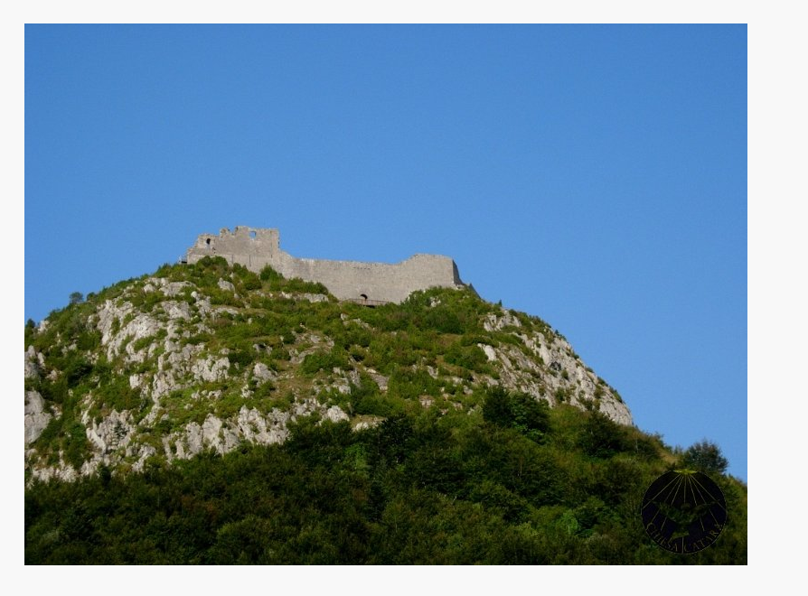
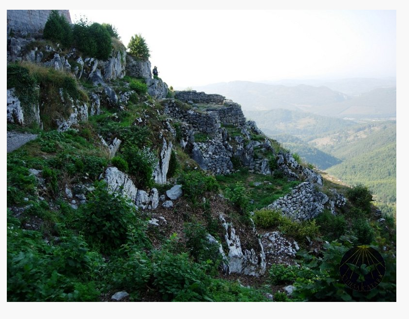
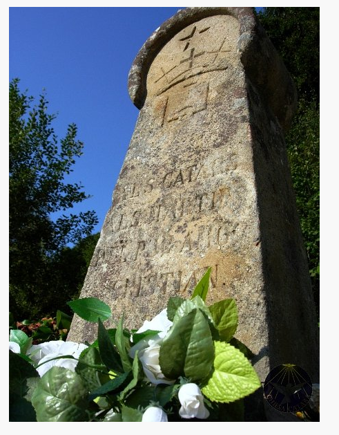
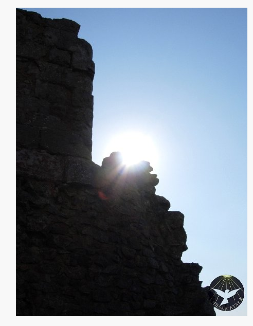
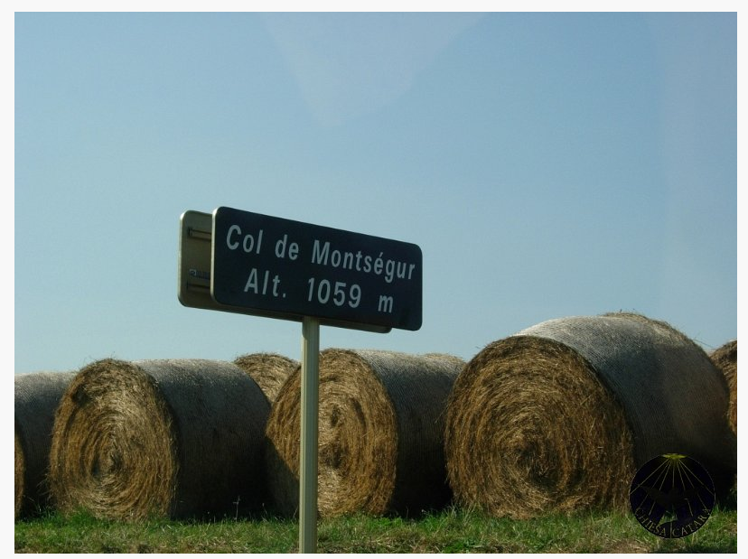
Photographs by the author, taken during a pilgrimage through Occitania.
Peyrepertuse: fortresses of Occitania
On the same pilgrimage I visited Peyrepertuse, an imposing medieval fortress in the Corbières. Its walls and rocky setting testify to the history of Occitania, although it should not be presented as a site of Cathar martyrdom equivalent to Montségur.
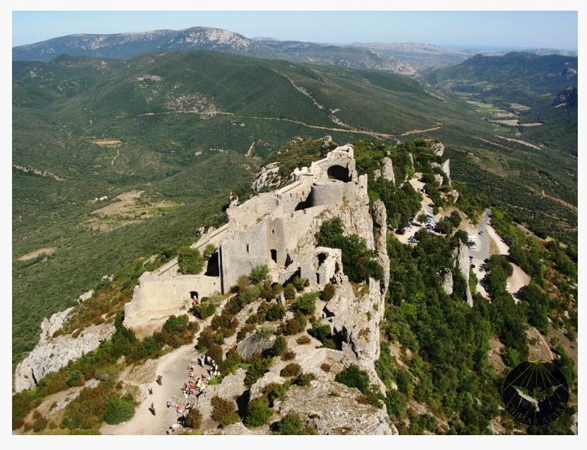
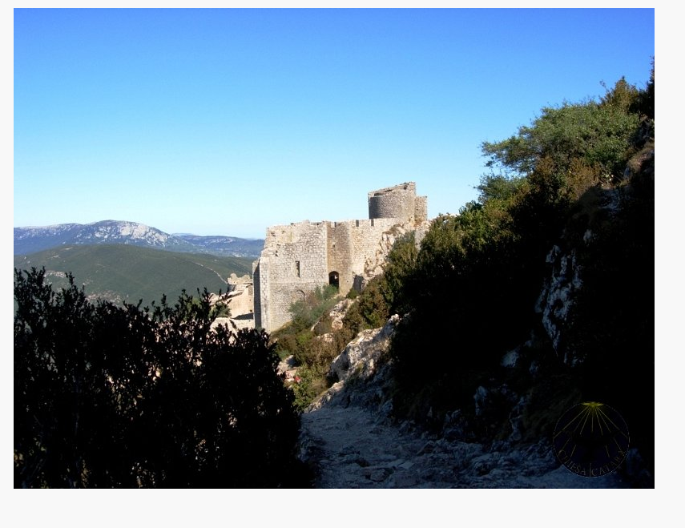
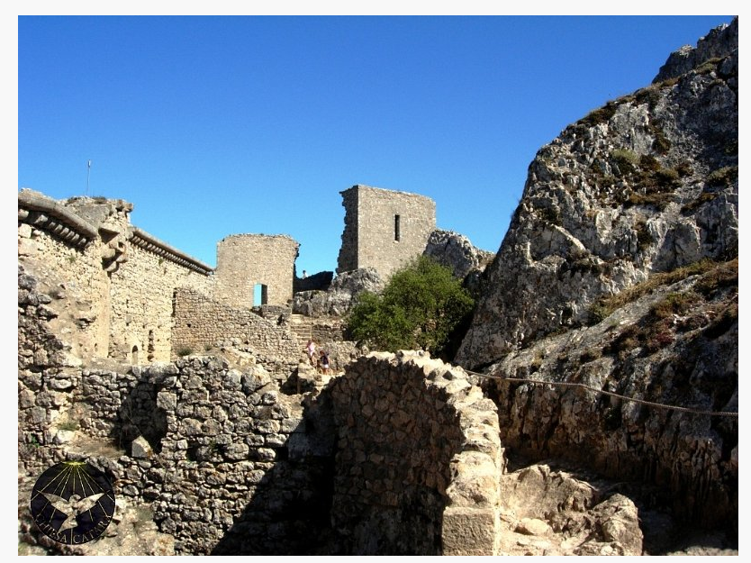
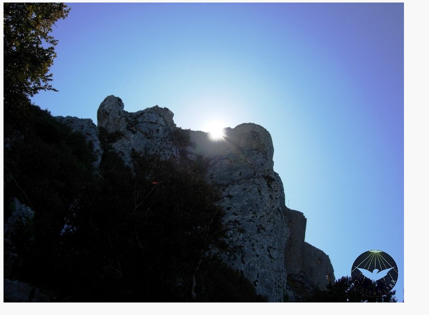
Photographs by the author, taken during a pilgrimage through Occitania.
Quéribus: one of the last strongholds
Perched on a rocky spur in the Corbières, Quéribus is remembered among the last refuges associated with Cathar resistance. Its surrender in 1255 marked one of the final stages of repression in Occitania. It was another stop on my pilgrimage.
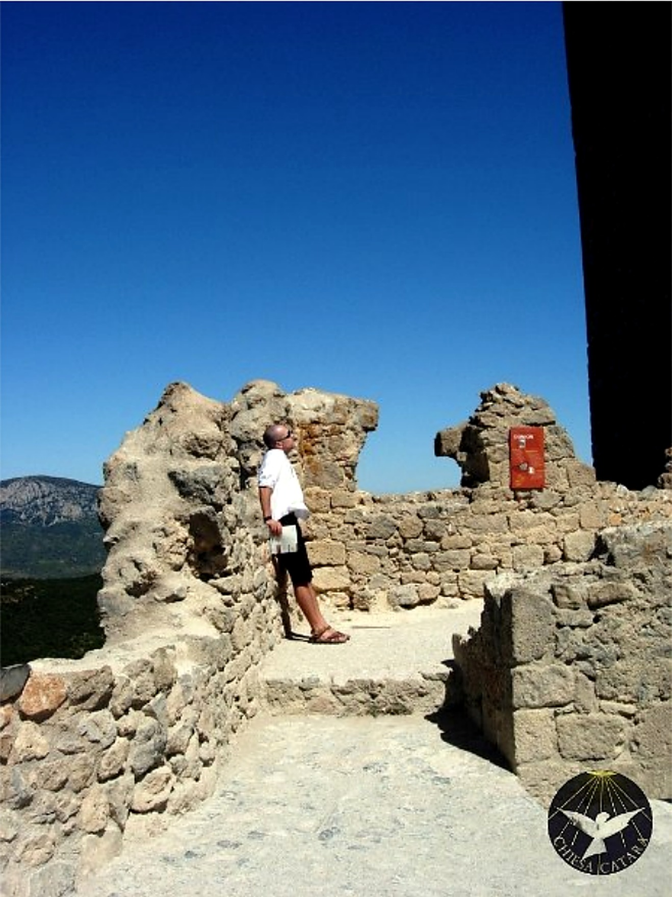
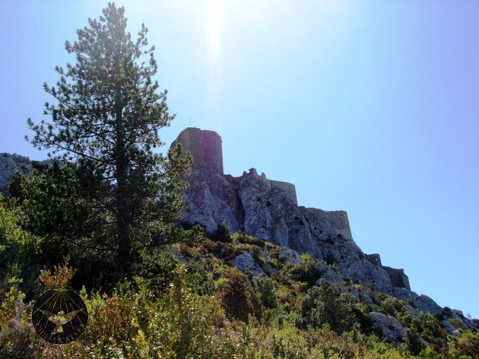
Photographs by the author, taken during a pilgrimage through Occitania.